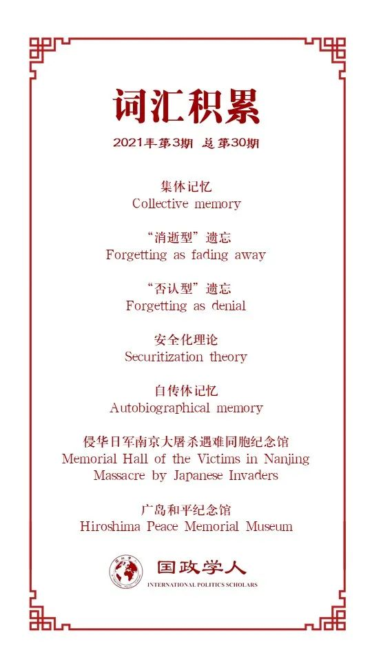

收录于合集

作品简介
【作者】 Karl Gustafsson，斯德哥尔摩大学经济史和国际关系系副教授、国际关系高级讲师、瑞典国际事务研究所高级研究员。他的研究领域包括安全、权力和集体记忆在国际关系中的作用，另外他也对研究设计以及网络资料如何用于国际关系研究感兴趣。
【编译】 姚博闻（国政学人编译员，新加坡国立大学公共政策系硕士研究生）
【校对】 谢菁
【审核】 崔宇涵
【排版】 胡蝶，高辉
【美编 】杜丛竹
【来源】 Gustafsson, K. (2020). Understanding the persistence of history- related issues in Sino–Japanese relations: from memory to forgetting. International Politics 57, 1-16.
【归档】 《国际关系前沿》2021年第3期，总第30期。
期刊简介
International Politics 《国际政治》是一本具有开拓性的学术期刊，致力于探讨跨国问题和全球问题。期刊研究问题包括俄罗斯与西方关系、中国和平崛起的机会、正义战争的概念、古巴后卡斯特罗时代的前景、美国衰落的可能性等等。2018年影响因子0.693。
中日关系中的历史因素：从记忆到遗忘
Understanding the persistence of history-related issues in Sino–Japanese relations: from memory to forgetting
Karl Gustafsson
内容提要
集体记忆争端是国际政治中双边摩擦的一个常见的根源。例如，尽管日本曾对历史问题作出过道歉及其他尝试，中日之间在战争记忆问题上的分歧仍然对中日关系造成了几十年的负面影响。为什么与历史相关的问题持续存在？现有的一些解释表明，这可能是因为改善关系的努力不足或者集体记忆被用作实现政治目的的手段。本文通过将概念的重点从“记忆”转变为“遗忘”来讨论这一问题。作者认为，遗忘的主要概念是逐渐消逝和否认，这使得人们往往会从安全的角度理解集体记忆。作者表示，将遗忘进行概念化，并将其视为所有记忆所固有的，可以让国际记忆政治的参与者认识到，不仅其他人会忘记，而且他们自己的记忆也会逐渐淡化，从而缓解集体记忆带来的矛盾。
文章导读
在如何铭记过去的问题上，双边分歧在国际政治中很常见。此类争端往往在围绕领土和资源的冲突中发挥核心作用，使它们更加难以解决。尽管政府试图改善关系，并克服关于历史记忆的分歧，但某些情况下与集体记忆有关的争端仍然对国家之间的关系造成持续的负面影响。
中日关系是历史问题持续存在的一个缩影。二十世纪三四十年代日本侵华的集体记忆对中日关系造成了数十年的负面影响。尽管战后日本颁布了“和平宪法”，并在1972年实现中日关系正常化，日本首相和其他政府代表也多次道歉，但中日之间的历史问题并没有消失。为什么关于集体记忆的矛盾持续存在？为什么旨在改善集体记忆的外交政策行动往往不够充分，而且效果不尽人意？
目前与中日关系相关的研究中对这些问题存在几种解释：一些人认为道歉是不够或者无效的。另一部分人则认为，这个问题之所以一直存在，是因为集体记忆被用作实现政治目的的手段。还有人认为，这个问题之所以存在，是因为集体记忆是满足身份认同需求的关键。这些解释都突出了中日间记忆政治的重要性。本文试图通过将研究重点从“记忆（memory）”转变为“遗忘（forgetting）”来对此议题进行分析。文章认为，将焦点从记忆转移到遗忘，并深入研究遗忘的概念，可以促进我们对国际记忆政治的总体理解，特别是对为什么这些问题持续存在的理解。
01
国际关系中的集体记忆
为什么关于集体记忆的争论如此经久不衰？就中日关系而言，有人认为日本在通过对历史表示遗憾以尝试解决历史问题的方式是不够的，因为日本政客往往在随后会采取一些被视为与其道歉相悖的行为（比如否认日本发动战争的侵略性质）。然而，学者们似乎过分关注道歉本身或日本国内的反应，而对中国人集体记忆的作用没有给予足够的关注。另一些人则认为，集体记忆被中国政府和日本右翼政客用作实现政治目的的手段。这种观点认为，中国政府提及日本战时侵略来寻求日本的让步。然而，这种做法在近年不再有效，因为许多日本人相信日本的道歉已经足够了。另一些人则认为，国家行为者利用战争记忆来增加自身合法性或向另一个国家施加压力。这一论点暗示政府行为者或多或少地控制着集体记忆，并能够随心所欲地打开或关闭这个问题。然而，即使双方政府都在努力改善关系，结果仍不甚理想。还有观点认为，这个问题之所以存在，是因为集体记忆对于满足身份需求至关重要，以至于超过了改善两国关系的重要性。
02
**
**
从“记忆”到 “遗忘” ****
在记忆研究中，人们的关注点已经开始逐渐从“记忆”转向“遗忘”。学者们认为遗忘不仅是记忆的丢失或记忆的另一面，而本身也是一个概念，并且比人们通常认为的要复杂得多。本文将讨论三种有关遗忘的概念，这三种概念对理解中日记忆政治十分有用。
创造了“集体记忆”一词的Maurice Halbwachs认为，集体记忆主要是通过经历过事件的人之间的日常交流来分享的，遗忘被理解为记忆的消逝（fading away）。对遗忘的另一种常见理解是主动并且以行为者为中心的，它从否认（denial）的角度看到了遗忘的威胁，并识别那些被视为试图否认集体记忆的行为者。在国际记忆政治中，否定记忆的行为者通常是一些其他国家以及与那些国家有关的行为者。消逝与否认是遗忘的两个方面，它们被认为是同时起作用的。
在记忆研究中，关于遗忘恐惧的评论以及将遗忘视为一种威胁的观点比比皆是，而“记住”则被视为是积极的。这表明关于遗忘的讨论往往与安全（security）有关。在安全化理论（securitization theory）下，记忆已经与安全挂钩。对于消逝型遗忘，集体记忆被视为一种安全问题，即使没有来自外部的威胁，人们仍需要采取安全性措施以防止遗忘。而当一种言论和行为被解读为否认时，人们会将其视作对记忆的威胁。防止遗忘的方法包括建造纪念碑、博物馆、图书馆和档案以及组织纪念仪式。否认型遗忘则往往会引发国际社会对被否认的记忆的支持和认可，同时也会引发针对否认行为者的严厉批评。
然而，只把遗忘划分为“消逝型”与“否认型”是不完整的。有观点认为遗忘是记忆固有的一部分，人们会通过重新解释和复述来忘记，从而把不舒服的记忆变成我们更容易接受的“自传体”记忆（autobiographical memory）。在国际政治语境中，通过改变对过去事件的记忆，一个国家可以重新定义它与过去曾与之交战的其他国家的关系，从而使更有可能建立和解关系，寻求加深与其他国家的关系。然而，这种主动性也可能加剧记忆的冲突，一个群体在记忆过程中忘记的事物很可能就是另一个群体记住的事物。在这种情况下，我们可能会看到各国对国际认可的争夺。
03
遗忘与中日关系
在中国和日本，数以百计的博物馆以不同的方式纪念发生在20世纪30年代和40年代的战争。本节以两个博物馆——广岛和平纪念馆和侵华日军南京大屠杀遇难同胞纪念馆为例。
在防止记忆消逝方面，日本的广岛和平博物馆往往被那些经营和平博物馆的人明确地描述为将幸存者的经历传递给没有经历过战争的几代人的工具，以使得记忆不会因消逝而被遗忘。博物馆的和平要旨明确地与要求废除核武器联系在一起，换句话说，关键不只是为了记住而记住，而是要推动特定的外交政策。在中国，爱国主义教育大多与中国近代史，特别是抗日战争相关，其关键功能可以说是为了保护集体记忆。铭记历史的必要性与未来的行动联系在一起，正如侵华日军南京大屠杀遇难同胞纪念馆的结束语所言:“中国人民将坚定不移地坚持走和平发展道路，为中华民族的伟大复兴而奋斗。”很明显，在日本和中国，这些用于重要纪念日的纪念仪式的纪念场所，使得对抗人们所理解的遗忘威胁变得可能。
而为了防止对历史的否认，南京纪念馆解说词明确指出，遗忘的威胁是否认，该馆还包含一个名为“捍卫历史真相”的部分。2015年，尽管有来自日方的抗议，纪念馆还是完成了在联合国教科文组织的登记申请。不仅中国，日本也通过在联合国教科文组织的登记来寻求保护集体记忆。1996年，广岛和平纪念碑被联合国教科文组织列为世界遗产。当时，中国代表对此表示批评，认为受害最深的不是日本，而是亚洲其他国家和人民，此举将“不利于维护世界和平与安全”。
在认为遗忘是记忆的固有的一部分的人看来，尽管日本承认有“大量”中国人被杀害，但除了遇难人数“很难确定”外，日本官方避免承认这是一场特别大的大屠杀，从而寻求保持一种连贯和积极的自我意识。而在中国，遇难者人数没有任何不确定性。此外，中国也通过将抗日战争囊括为世界反法西斯战争的一部分，争取其他国家的认可。与之类似，中国对联合国教科文组织广岛和平纪念碑题词的表示批评，是因为日本忘记了中国认为必须记住的东西，而且让中国发现，忘记（日本的受害者）也是他们自己记忆中固有的。也许事实是，各国批评其他国家忘记或否认记忆，以避免面对遗忘也是它们记忆的固有事实。
04
结论
本文阐述了为什么关于集体记忆的争论如此持久。它试图超越对记忆的普遍关注，而是主张对遗忘的概念进行更多研究。文章表明，即使在没有安全化行动的情况下，即使集体记忆没有受到敌人的威胁，人们也倾向于从安全的角度来理解集体记忆。遗忘即否定的观念在中日记忆政治中也很常见，记忆在政治化后变得更加有对抗性。虽然那些参与国际记忆政治的人通常认为遗忘是一种消失和否认，但他们似乎不接受第三种理解——遗忘是记忆固有的。来自对方记忆的威胁是双重的：它使得对方忘记了我们认为应该记住的东西，但它也提醒我们自己也在忘记。人们应该认识到这一点，这也许有利于促进各国间的对话。
译者评述
历史问题毫无疑问是中日之间最关键而又最敏感的问题之一。它既是中国与日本学术界存在不同历史观念的直接体现，也是日本政府及民间组织不同政治利益反复交锋的工具[1]。历史问题在战后至今的几十年里持续地影响着两国关系，也是中日间一触即燃的矛盾导火索。
关于历史问题，中日双方争议的焦点在于“历史认识”及其包含的历史责任，实质在于如何塑造相互的“历史记忆”。本文中，作者从一个较为新颖的角度——“遗忘”，而不是传统的“记忆”角度来分析两国的历史记忆。作者认为，在“安全化理论”下，集体记忆已经与安全挂钩，无论是“消逝型”还是“否认型”遗忘都会被视为对自身安全的威胁。随后，作者又通过引出有关遗忘的第三种概念——“自传体记忆”，以说明遗忘不只是记忆的对立面，也是记忆固有的一部分。人们在批评对方遗忘的同时，也在按照自己的意愿遗忘部分记忆。最后，作者指出，理解这一点将对于各国之间就历史记忆进行沟通至关重要。
尽管如此，我们也应该认识到，中日间历史问题由来已久，背后原因错综复杂，绝非仅仅是记忆与遗忘的问题。例如，两国国内的民族主义情绪、战后日本去军国主义化的不彻底[2] 、美国等大国的介入[3]、意识形态差异等因素都或多或少地造成了历史问题延续至今的局面。因此，妥善地处理各自历史记忆或许可以成为改善中日关系一个契机，但要解决历史问题，两国还需从一个更加全面的角度着手。
参考文献
[1] 张晓刚.试论日本右翼势力对中日历史问题的操弄及对应策略[J].大连大学学报,2019,40(02):9-15.
[2] 西林.日本战后反省态度问题的历史与思想根源[N]. 团结报,2019-08-15(007).
[3] 李臻,徐显芬.中日“历史问题”缘起的美国因素——以对日占领体制及思想文化改造为中心[J/OL].西北师大学报(社会科学版),2021(02):139-144.
词汇整理

文章观点不代表本平台观点，本平台评译分享的文章均出于专业学习之用, 不以任何盈利为目的，内容主要呈现对原文的介绍，原文内容请通过各高校购买的数据库自行下载。
好好学习，天天“在看”